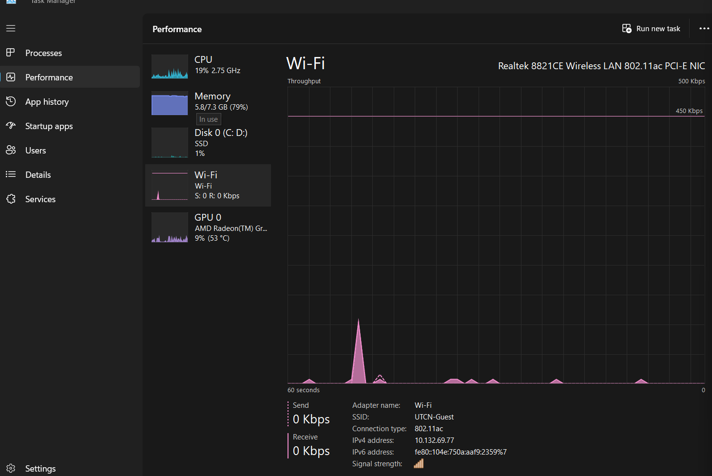
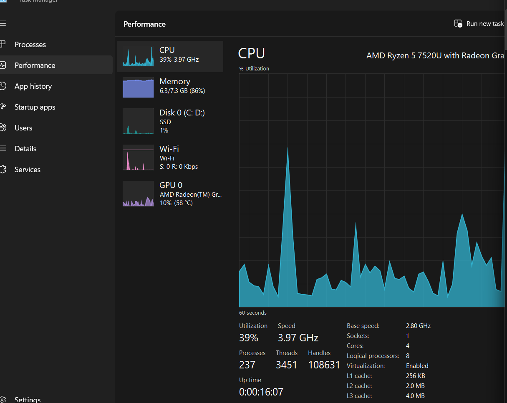
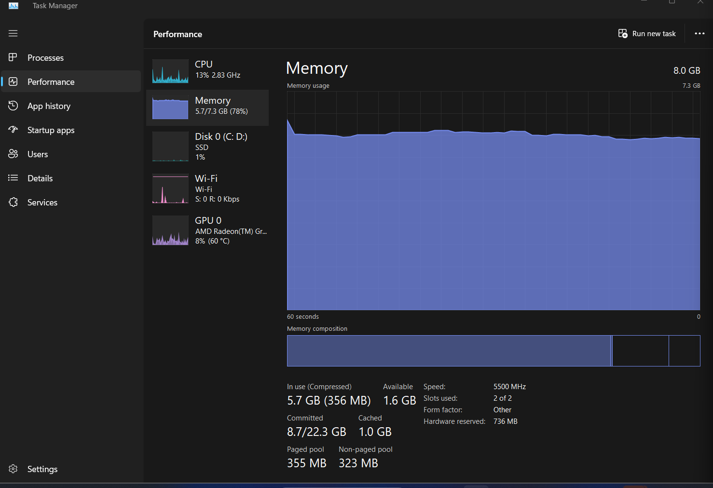
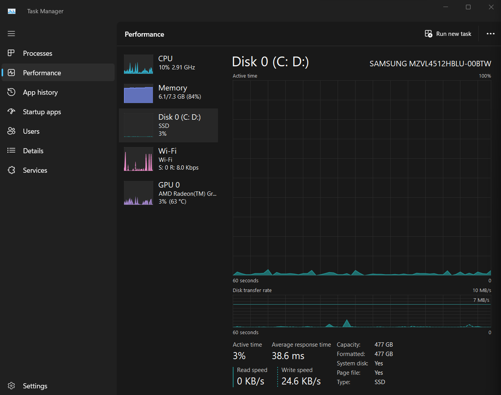

Contact: arazdurdyyevpena2606@gmail.com | Tel: +40 775 367 175
| Producator | Parametri | |
|---|---|---|
| CPU (Procesor) | Intel | i7 10700K, 3.8 GHz |
| RAM (Memorie) | Corsair | 16 GB DDR4 |
| HDD/SSD | Samsung | 1TB SSD NVMe |
| Monitor | Dell | 24 inch, 1080p |

Conexiune la Internet: Fiber Optic, 500 Mbps
Apăsați de două ori pe imagini pentru slideshow (Double Click).


